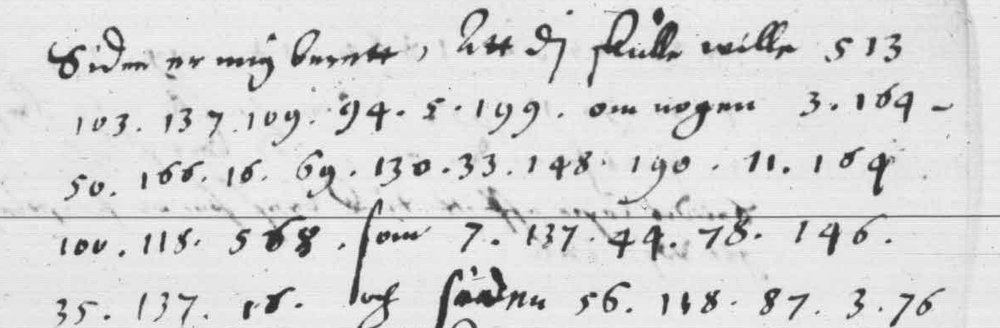

Cipher Letters › Rigsarkivet › 1629
"Thus they will, thus they command": Palle Rosenkrantz to the Statholder Frands Rantzau, London, 2 and 15 February 1629
Two Danish letters from London about money owed to Christian IV, with their sensitive words in a number code. The code's table of letters was recovered here from the ciphertext alone. Its word codes are not solved, so about half the cipher words are read. No earlier key or reading was found in the places searched.
- Letters
- Letter 2 (the working files' numbering), "Aff London d. 2 Febr. 1629", with a postscript leaf bound inside it; and letter 5, 15 February 1629. Danish, mostly in clear, with runs of figures
- From / to
- Palle Rosenkrantz, London → the Statholder Frands Rantzau ("Kiere Her Statholder och kiere Broder")
- Held at
- Rigsarkivet (Copenhagen), Tyske Kancelli, Udenrigske Afdeling, England A II 13 (1620-34), folder "Relation fra Palle Rosenkrantz 1628-1629"; Arkivalieronline unit 261258, images 266-270 and 274-276
- Cipher
- "Code A": figures 3-199 stand for letters, several figures to a letter; figures from 200 up stand for words or names. 571 cipher figures in the two letters
- Read
- Both letters decoded on one pass with the frozen key. 95 of 179 cipher words read as sense (53.1%). The 62 word codes are the main gap
- Record
- Cyphersolver, targets/rosenkrantz1629 (PR #956, merged 25 Nov 2026; a new target, not in the catalogue). The maintainers' own write-up is still to come: the folder is marked "in progress".

Decoded
medmig {om nogen} af
kortningaf
de [568] {som} reste
rer {och siden} betal
What is new and what was known
Before any transcription the working sessions searched the Cyphersolver issues, pull requests, catalogue and leads; the DECODE database; Bricka and Fridericia's edition of Christian IV's own letters (seven volumes); Molbech (1848); the 47th Report of the Deputy Keeper of the Public Records (1886), which calendars the folder as "partly in cipher" with no decipherment; Rigsarkivet's key series; and the web. No key, decipherment or printed reading of code A was found.
Not reached: Danske Magazin, the English State Papers (TNA SP 75), and full-text searches in HathiTrust and Google Books. Not finding a reading is not proof that none exists.
The letters were found on 24 Nov 2026 while looking for more of Johan Zobel's cipher (see Zobel 1629) in the same archive unit. What this work adds: the letter table of code A, recovered from the ciphertext alone; one frozen decode of both letters; a Danish reading with every hole marked; and an English translation.
The letters
The folder holds fifteen letters of Rosenkrantz's London relations, images 263-293: two in clear, six in number codes to the Statholder and the Chancellor Christian Friis, and seven in a sign cipher to the king. Only letters 2 and 5 are in code A. In letter 2 the writer says in clear that the king's letter is "y Zifre" and asks the Statholder to decipher it himself.
Letter 2 is a main letter of six pages (images 266R-270L) with a postscript leaf bound inside it (267R-268L). Letter 5, of 15 February, has cipher on two pages (275R, 276L). setting not checked against a history
What it says
Danish as read, in the decode's own spelling; English from the translation in the repository (by Claude, not checked by a person or a reader of seventeenth-century Danish). [568] = a word code with no value; (?) = a word with one wrong letter, counted unread; [s] = a letter supplied by sense.
Rosenkrantz reports on money owed to Christian IV. He is politely turned away with notes of arrears instead of payment. The interest and principal of money lent are accepted, but paid slowly, and a cloth delivered earlier and other money are to be set off, with jewels pledged against them. He fears he will get nothing:
"Men ieg frycter att ieg lader alene intet dermed erlanger. Sic uolunt, sic iubent.""But I fear that by this alone I shall obtain nothing. Thus they will, thus they command."
Only the Latin tag is in cipher here. He repeats a warning that [397] has "intet uist" (nothing certain) to rely on, reports talk of sending [1041] [304] into the Baltic ("Osterseen"), and notes that Parliament is busy with religion against the Papists and Arminians.
The postscript leaf, in the crop above, says he has been told they would deal with him about reducing the [568] outstanding, and then pay. The letter of 15 February calls something "a great expense, which I fear is in vain":
"Och dett seer selsom ud med [1544] alting er och bleffuen uuist och lang[s]omt.""And it looks strange with [1544]; everything is and has become uncertain and slow."
Who "they" are, and what the word codes stand for, is not established. The code 568 appears seven times, as "de laante [568]" (the lent [568]) and "de [568] som resterer" (the [568] that remain outstanding); the sense suggests a money word, but a guess is not counted as a reading.
The cipher
A number code with a nomenclator. The writer separates the figures with full stops and does not mark word breaks. Figures 3-199 stand for letters. The key gives 66 figures for 20 letters (63 of them below 200), from one figure (p = 184) to five (e, s, u). The figures below 200 sit on a grid of nine columns: each letter's figures step by 9 (n = 130, 139, 148), and in each row of figures with the same remainder after dividing by 9 the letters rise in alphabetical order. Three high figures, 308, 317 and 1135, were read as h.
The other figures from 200 up stand for words or names: 48 different codes, 62 uses in the two letters. None is solved.
The same folder holds two other systems by the same writer, both unbroken: "code B", a larger number code in four letters of 13-24 March 1629 (273 figures), and a cipher of drawn signs and digits in seven letters to the king (408 signs).
How it was read
- 24 Nov 2026, before anything else. The prior-art search above, written down, and the period keys in Rigsarkivet's "Chiffer" packet compared with the cipher. None fits.
- Transcription. One model session copied the figures from strips of the full-size archive images, marking doubtful digits. It was frozen (fingerprinted) at 11:53:54 UTC. A second model session transcribed the same figures separately; the two agree on 560 of 571.
- A disclosed slip. Before that freeze, one exploratory solver run was made on all the code A text, and both solver sessions saw its decode of every line. The transcription was not changed after it.
- The key from the main letter alone. The main letter of 2 February (370 decoded letters) was used to find the key; the postscript leaf and the letter of 15 February (136 letters) were set aside. A solver (simulated annealing) scored keys against a Danish language model built from 576,754 letters of Christian IV's own Danish letters of 1589-1635. Two seeds gave the same key. No hand edits.
- Frozen, then decoded once. The key and the rules for figures it had not seen were frozen at 12:24:05 UTC, and both letters were decoded at 12:24:08 UTC. Nothing was emended: that pass is the figure of record.
- Judged by a separate session. A Claude Opus 5.5 session saw only a brief and the decoded letters, and scored each letter: sense, a one-letter slip, or no sense.
- Time-stamped. A fingerprint list of the working folder (641 files) was stamped by two outside time-stamp services at 21:18 UTC, about nine hours after the decode.
Checks
- The set-aside letters, a re-check: 127 of the 136 letters of the postscript leaf and the letter of 15 February decode to sense (93.4%). This is not a blind held-out test. The exploratory run decoded those lines before the key was frozen, and the sessions saw that decode. The key of record came from the main letter alone, but the solver settings were chosen after that run. Read it as a re-check of the key.
- Shuffled keys: 0 of 5,000 shuffled keys score as well as the real key, at each of two seeds, on the main letter and on the set-aside letters alike.
- The project's check (PR #956), by a model session for the maintainers, not a person: a decoder written afresh from the key and rules reproduces the decode on 117 of 117 lines; the read share was recounted as 95 of 179 words (2 February 84 of 160, 15 February 11 of 19); the Danish was read as sentences, with the clear text carrying coherent sentences and the decoded words fitting them; image 267 agrees with the transcription. It recorded the maintainers' reading review (grade B) in place of the one signed by the contributor's session, and noted that the set-aside figure is not blind.
- What the checks could not confirm: the order of events rests on the contributor's record and the file times, because the time-stamps came after the decode. The repository's statistical validation could not run: it needs a Danish corpus that could not be downloaded, and Cyphersolver has no period Danish model. The project's sentence checker rates the reading "not a reading", largely because every word code is a hole and the 1629 spelling is judged against modern word lists.
How much is read?
| Read as sense | |
|---|---|
| Cipher words, by the read bar: both letters | 95 of 179 = 53.1% |
| Cipher words: letter of 2 February (main letter and postscript leaf) | 84 of 160 = 52.5% |
| Cipher words: letter of 15 February | 11 of 19 = 57.9% |
| Letters, strict judge: main letter (key built from it) | 305 of 370 = 82.4% |
| Letters, strict judge: set-aside letters (a re-check, not blind) | 127 of 136 = 93.4% |
| Letters, strict judge: all (the letter figure of record) | 432 of 506 = 85.4% |
By letters, the figure of record is 432 of 506 (85.4%) over both letters. The 93.4% is a re-check of the set-aside letters, not a held-out score: this record has no blind held-out figure. By words, the figure of record is 95 of 179 cipher words. The 84 holes are 62 word codes, 11 words with no sense, 3 figures with no value and 8 words with a one-letter slip: 62 + 11 + 3 + 8 = 84. The letter table reads; the word codes do not. So the letters are read in part, not read.
What is not read
- The 62 word codes (48 different). Seven are used more than once (568 seven times; 379 and 539 three times; 551, 673, 1444 and 1530 twice). No code A codebook was found in the Chiffer packet, the bound register or Rigsarkivet's key series. The other 41 are used once each, which gives no second context.
- A later attempt on the word codes failed its own test. On 25 Nov 2026 (Brisbane time) a fourth working pass, run after the filing and not part of the Cyphersolver record, tested whether the word codes are numbered in alphabetical order of their words, as code B's codes seem to be. Its pass mark, set in writing before the run, was that no more than 1 in 100 shuffled fits should do as well. It got about 3 in 100 (p = 0.033 and 0.034 at two seeds), so it failed; no word values were frozen and no word decode was made. A variant on content words only did worse. A search of the rest of the archive unit (images 220-262 and 334-345) found no further letters in code A.
- Code B (four letters, March 1629) and the sign cipher to the king (seven letters) are not broken. A manuscript key by Temler to Christian IV's own sign cipher of 1625-27 is in the Royal Library, Copenhagen, and has not been seen; whether it fits is unknown.
- Doubtful digits. Ten places are not settled on the image: nine left open after a look at the enlarged image, and one digit under an ink blot. Most fall in word codes or would change at most one letter. One, at 15 February line 3, may be 130 (n), which would turn the slip "ietet" into "intet" (nothing). A person's reading of the original would settle them.
- Three figures appear only in the set-aside letters: 63 and 81 have no value, and 136 is read e by the frozen rule where the sense wants n.
What remains uncertain
- The transcription. One model reader made the transcription of record; the clear Danish was transcribed loosely and not collated against the image. No person has checked the figures or the clear text.
- The reading and the English. Made by a model session and not checked by a person, a reader of seventeenth-century Danish, or any edition.
- The setting (Rosenkrantz's embassy to Charles I, the debts and subsidies owed to Christian IV, the Parliament of 1629) was not checked against any history.
A Rosenkrantz in Hamlet?
Not this one. Shakespeare's Rosencrantz is a stage character, written about 1600, who borrows the name of a great Danish noble family. The likely models are Frederik Rosenkrantz and Knud Gyldenstierne, cousins of Tycho Brahe who visited England in 1592 sourced: Voelkel, as cited on Wikipedia; a suggestion, not proved. Palle Rosenkrantz is a later member of the same family. He was Christian IV's ambassador in London in 1626 and again from May 1628 to May 1629 sourced: SSNE 1193.
The coincidence is a nice one all the same. In the play, Rosencrantz carries a sealed letter from the King of Denmark to the King of England. More than thirty years after those 1592 visitors, a real Rosenkrantz was sending secret letters home from the English court. In 1627 he had even carried Christian IV's new cipher list to Chancellor Friis himself sourced: Bricka and Fridericia, vol. 2, no. 70.
Who did what
Malcolm McBratney (Brisbane) directed the work and set its rules, working with Claude (Anthropic): Claude Fable 5.2 and Claude Opus 5.5 were the solver sessions; Claude Opus 5.5 was the separate judge and made the reading, the translation and the filing. He sent it as PR #956, merged by Daniel Bourdeau on 25 Nov 2026. The maintainers had the filing checked by a model session, which recorded their reading review.
Sources
- Rigsarkivet (Copenhagen), Tyske Kancelli, Udenrigske Afdeling, England A II 13 (1620-34), "Relation fra Palle Rosenkrantz 1628-1629", Arkivalieronline unit 261258, images 266-270 and 274-276. Image 267 (the postscript leaf). Reuse terms not recorded in the working files.
- Cyphersolver, targets/rosenkrantz1629: prior-art record, transcriptions, key, rules, decode, judging, controls, reading, translation, time-stamps and the project's check.
- Cyphersolver PR #956 (the contribution) and the maintainers' review commit f4cf01f.
- 47th Annual Report of the Deputy Keeper of the Public Records (1886), p. 57: the folder calendared as "partly in cipher".
- Scotland, Scandinavia and Northern Europe 1580-1707 database (SSNE), University of St Andrews, entry 1193, Palle Rosenkrantz.
- Wikipedia, "Rosencrantz and Guildenstern", citing J. R. Voelkel on Frederik Rosenkrantz and Knud Gyldenstierne (consulted 25 Nov 2026).
- C. F. Bricka and J. A. Fridericia (eds), Kong Christian den Fjerdes egenhaendige Breve, vol. 2, no. 70 (30 May 1627), archive.org.